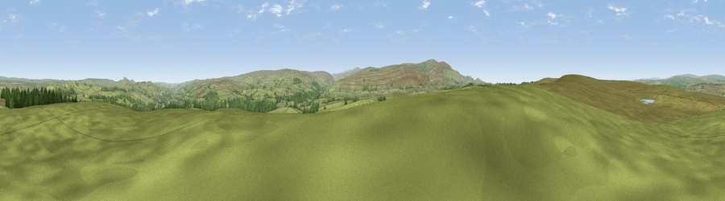

Viewpoint near Greenhead
#14548 in England · top 40% of its area beats it · near GreenheadWhere it is
The exact computed spot (NY 65775 63075). Click the marker for map links.
The view, rendered

A 360° render of this exact spot computed from the terrain model, tree cover and land cover — summer colours, afternoon light, calibrated against photographs of famous viewpoints. Real trees, hedges and buildings will differ in detail.
The panorama
Grey silhouette: terrain skyline in each direction (720 bearings, Earth curvature and refraction included). Dashed green: skyline with trees (+15 m) and buildings (+8 m) as obstacles. Blue strip: how far the ground is visible on each bearing.
Where the view opens
Wedge length = distance to the farthest visible ground on that bearing (vegetation-aware). Rings at 10, 25 and 50 km.
What fills the view
92% grassland · 7% woodland
Angular shares of the visible panorama (visual magnitude), not map area. Landscape diversity 0.13 (0–1 Shannon).
Key numbers
More beautiful places nearby
The staircase of upgrades: each row has a higher view potential than everything closer. Driving times are estimates from straight-line distance, calibrated against real road routing — check an actual route before setting out.
| Place | Direction | Drive | Score |
|---|---|---|---|
| Viewpoint near Greenhead | WNW · 0 km | ~1 min | 59.2 |
| Viewpoint near Greenhead | WNW · 2 km | ~5 min | 62.5 |
| Viewpoint near Gilsland | W · 3 km | ~7 min | 66.6 |
| Viewpoint near Low Row | W · 6 km | ~12 min | 67.5 |
| Viewpoint near Halton Lea Gate | SSW · 6 km | ~13 min | 72.0 |
| Viewpoint near Hallbankgate | SW · 8 km | ~16 min | 73.4 |
| Cold Fell | SW · 9 km | ~18 min | 74.0 |
| Whinny Fell | WSW · 10 km | ~20 min | 74.2 |
54.96112, -2.53603 · source: screening · position refined by local search. Computed location — check access rights before visiting.